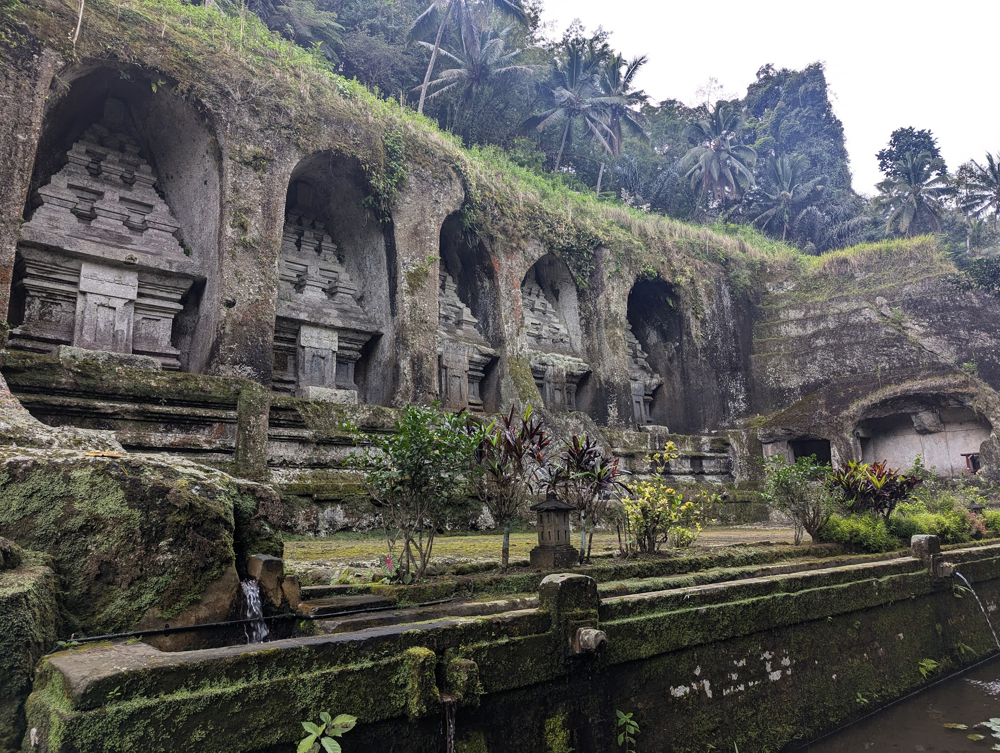
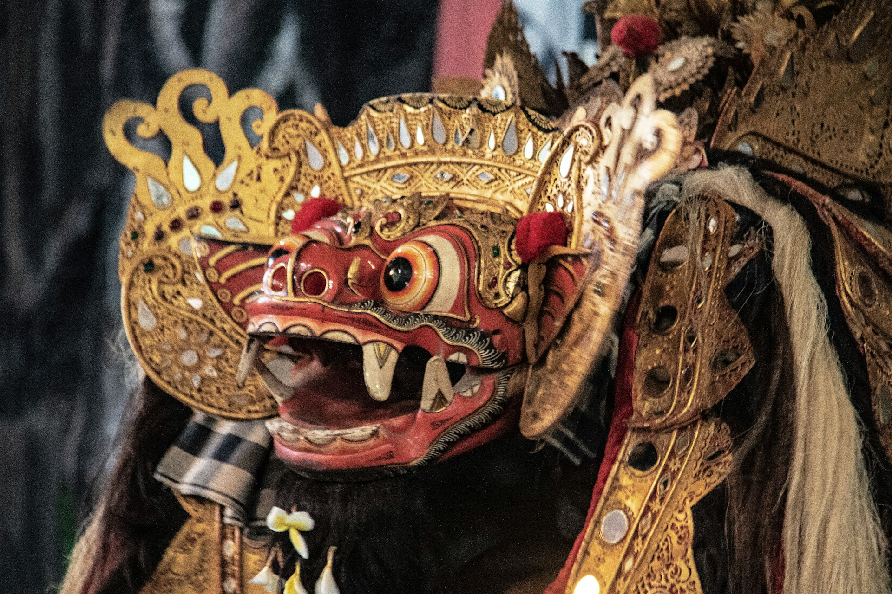

Explore
Our team will be more than happy to help you plan excursions to Bali's most beloved spots as well as local hidden gems.

Immerse yourself in the sacred stillness of Gunung Kawi, the Valley of The Balinese Kings.

Get lost in the bustling town of Ubud - Bali's cultural heartland and our personal vegan food heaven.

Hike up Mount Batur and watch the sun rise over Bali's most sacred Mount Agung.